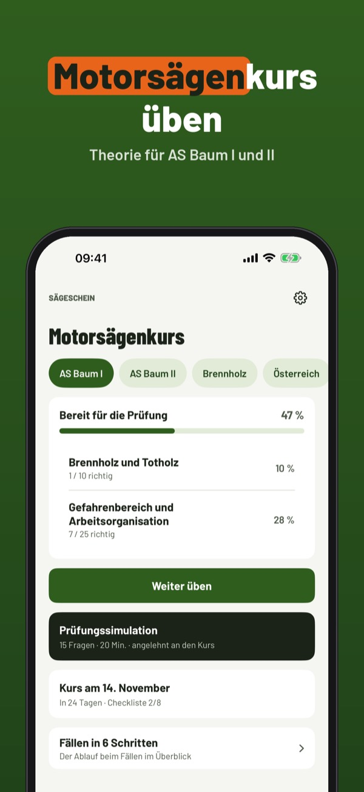
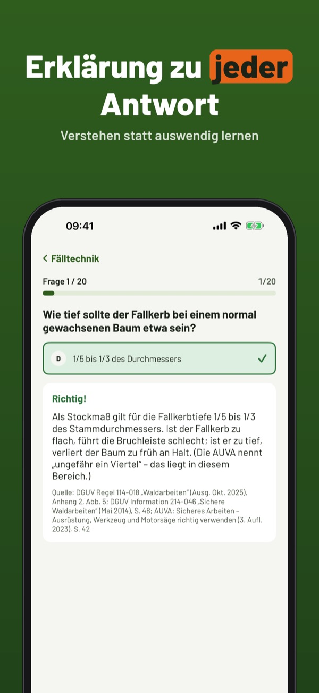
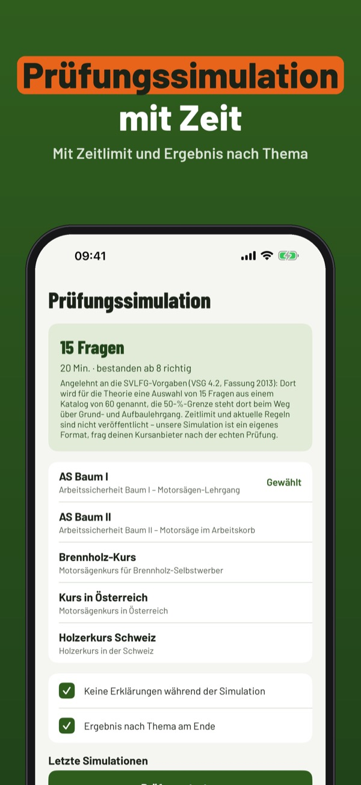

Theorie für AS Baum I und II
Übe die Theorie für den Motorsägenkurs: Fragen mit Erklärung, Prüfungssimulation und Fällen in 6 Schritten – auf Deutsch und offline.



Sägeschein hilft dir, die Theorie für den Motorsägenkurs zu üben – für AS Baum I und II, den Brennholz-Kurs und Kurse in Österreich und der Schweiz.
• Fragen nach Thema mit Erklärung zu jeder Antwort
20 Fragen, die Begriffe und die Checkliste kannst du ohne Kauf nutzen. Die Vollversion ist ein Einmalkauf und schaltet alle Fragen, Simulationen und die Statistik frei. Kein Abo.
Sägeschein ist unabhängig und nicht mit Kursanbietern, Berufsgenossenschaften oder Behörden verbunden. Den Nachweis bekommst du im Kurs.
Terms of Use (EULA): https://www.apple.com/legal/internet-services/itunes/dev/stdeula/
Privacy: https://baytechbv.github.io/privacy/motorsaege-dach/